This figure provides a visual summary of your scores on the factors
of the SPI-27. The black line down the middle indicates the average
score for each trait. The colored bars show how much you scored above
the average (the colored bar extends out to the right from the mid-line)
or below the average (left of the mid-line). If your score matches the
average, you won't see any color.
The next section gives more detailed descriptions of each trait and
some thoughts about the meaning of your scores. By default, we only
show the feedback for your 4 most extreme scores. To see your scores on all of the factors, click the link at the bottom of this box.
Anxiety is something that many people struggle with. It's difficult
to escape entirely, as most people typically feel anxiety when put into
stressful situations. A little anxiety has been shown to provide a
useful boost in motivating people to perform well or to change their
behavior if necessary. But at its most extreme, anxiety can get in the
way of daily living and make an individual fearful of engaging in
various situations. Anxiety can be generalized (involving a more
distributed sense of foreboding or malaise) or specific to certain
conditions, such as social engagement or test-taking. For individuals
who find that anxiety creates problems in living, various therapies and
interventions are available to encourage more positive thinking and make
it easier to understand, process, and manage anxious feelings.
Your score on the Anxiety scale indicates that you rarely feel
anxious. It is likely that others view you as unflappable, even in
situations that might render most people nervous or worried. Even when
put on the spot, you probably handle yourself quite well. You may
therefore be much more comfortable than the average person when it comes
to shouldering responsibility and pressure or navigating tricky
situations.
People often rank Humor highly among the traits that they value in a
potential romantic partner or friend. Individuals high in humor may be
popular as a result of the mirth they spread around freely. They are
likely less restrained in showing that they think something is funny,
and more likely to keep a situation light and enjoyable through either
their own jokes or their enthusiastic approval of others' jokes.
However, individuals scoring low in humor are not necessarily dour... in
fact, they may even have a very good internal sense of humor that they
simply express less openly or express only to those close to them. Or,
they might be more likely to express their humor through writing or art
than through verbal laughter or loud jokes.
Your score on the Humor scale indicates that you are significantly
less likely to joke around or to laugh openly and frequently. You might
have a more serious outlook on life, which could be due to an awareness
of life's harsh realities or the need to bear a lot of responsibility.
This doesn't necessarily mean that you can't enjoy a good joke every now
and then. It's simply that you're less likely to guffaw loudly at a bad
pun or to get up on a table and dance just to entertain people.
Trust measures an individual's comfort at taking others at their
word, and their willingness to believe things as they are presented. It
also relates to ones' beliefs about the motivations of others and the
extent to which others will treat them with fairness and objectivity.
Individuals high in Trust are generally more likely to have an
optimistic view of human nature and less likely to doubt the intentions
of others. By contrast, those who are low in Trust tend to be hesitant
about exposing their vulnerabilities to others. They're also often
reluctant to take others at their word — they reach their own
conclusions only after careful consideration of the facts.
Your score on the Trust scale indicates that you are very high in
Trust. You probably believe in the fundamental honesty and goodness of
human beings and are likely to take people at their word. You may
therefore be more likely to accept people into your life. Though some
might mistake your faith in humanity for gullibility, others are
inspired by your trusting nature and wish to embody it.
The Perfectionism factor is one of the most intuitive to understand —
it can be explained simply as an individual's desire for perfection. An
individual high in Perfectionism will likely set high expectations and
then expect those to be met, by themselves and others. Perfectionists
notice many errors and flaws, and are therefore often hard to satisfy.
Their work may be of an especially high standard, but those around them
feel pressured as they strive to meet expectations. At its most extreme,
Perfectionism has the potential to cause difficulties in relationships.
Individuals low in Perfectionism feel less need to aspire to lofty
standards, and are more content with getting to the point of "good
enough" and leaving it at that. They may have more ease in letting go of
one project and moving on to the next than those high in Perfectionism.
Your score on the Perfectionism scale indicates that you are low in
Perfectionism. You are much more comfortable with imperfection (you may
not even perceive it as imperfection!), and flexible when things fall
through. You may have a more pragmatic understanding of the world and
realize that some things are out of your hands, no matter how much a
person strains for things to turn out a certain way. Most likely, you
have a good idea of when to let something go, when to forgive others,
and when to move on. Others are probably much less inhibited in sharing
their weaknesses with you. You are likely fairly easy to please, though
others around you who are higher in Perfectionism may at times be
frustrated with what they perceive as your lack of attention to detail.
Irritability
Individuals who are high in Irritability may be more easily rattled
by things, whether it be the shortcomings of others, one's environment,
or the world in general. This might be due to a lower tolerance for
frustration or a sensitivity to unpleasant stimuli. Individuals high in
Irritability find themselves frequently bothered by things, often
despite their efforts to feel otherwise. Although frequently feeling
annoyed doesn't necessarily mean that a person will always show it
outwardly or lose their temper, some individuals high in Irritability
may be perceived as angrier than the average person. Conversely, an
individual who scores low on Irritability may be fairly unperturbed by
negative things, although this does not mean that they lack concern
regarding what happens in the world.
Your score of 40 on Irritability places you higher than 16% of previous participants in this survey.
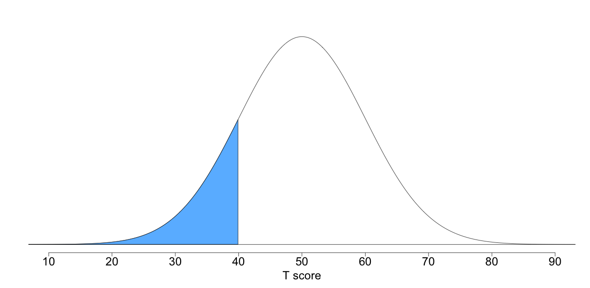
click for more info about reading this image
Your score on the Irritability scale indicates that you are less
likely to experience frustration or anger in response to things. It may
be that you are simply less fazed by the negative things that happen to
you, or that you have cultivated your ability to be patient and less
reactive to things. Whatever the underlying reason, you are likely to
have a firm handle on your angry emotions and to be more moderate in
your reactions to things than the average person.
"You don't have to attend every argument you're invited to."
Order
Orderliness is generally valued as an aspect of personality because
it is suggestive of tendencies towards organization, predictability, and
cleanliness. Like all traits however, it is not true that more orderly
behavior is always better. An excessive desire for order can lead to
perfectionistic behaviors and unrealistic expectations. In extreme
cases, the inability to tolerate even small amounts of disorder may be
associated with mental health issues. Orderliness scores tend to be
positively correlated with Industry and Perfectionism but are negatively
correlated with Sensation-Seeking and Easy-Goingness.
Your score of 40 on Order places you higher than 16% of previous participants in this survey.
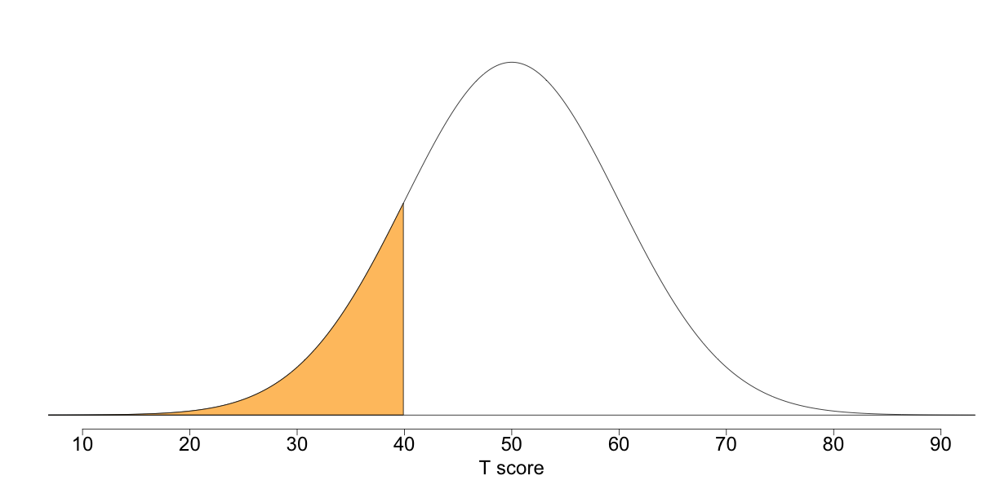
click for more info about reading this image
Your score on the Order scale indicates that you are somewhat lower
in orderliness. While details may be important to you, you're willing
to live with a fair bit of imperfection. You may prefer order and
regularity in your work and surroundings but it does not bother you to
have things out of place. You likely recognize that there are many
aspects of life that simply cannot be controlled so there's no point in
keeping things tidy all the time.
"If a cluttered desk is a sign of a cluttered mind, of what, then, is an empty desk a sign?"
— Albert Einstein
Emotional Stability
An Emotionally-Stable individual is not easily disturbed by daily
hassles and recovers quickly when more substantial stressors inevitably
occur. Emotional stability is not necessarily synonymous with
consistent positivity, but simply implies lower levels of reactivity.
This trait is sometimes used to describe the opposite end of the trait
of Neuroticism, though the latter tends to include a broader range of
individual differences. The key to Emotional Stability, as the name
suggests, is the degree and speed with which moods shift. Those who are
high in stability are better able to endure stress without getting
flustered. Those who are low, by contrast, will experience more
fluctuating moods as they go about their day.
Your score of 59 on Emotional Stability places you higher than 82% of previous participants in this survey.
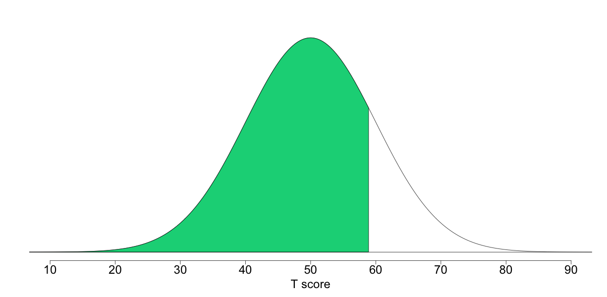
click for more info about reading this image
Your score on the Emotional Stability scale indicates that you are
somewhat high in stability. You are probably less easily upset or
emotionally reactive, and you may handle daily hassles better than most.
Although you probably get agitated from time to time, you are more
likely to deal effectively and coolly with frustrating or threatening
situations. Due to your controlled reactions, at times others may find
you cold or aloof. Emotionally stable individuals tend to be more calm
and free from persistent negative feelings. Freedom from negative
feelings does not mean that these individuals experience more positive
feelings than others, but they are less likely to experience frequent
mood swings or be shook up by negative events. Some emotionally stable
individuals may go so far as to seek out thrilling situations, such as
scary movies and roller-coasters, because they perceive these situations
to be less threatening than most people.
"When stability becomes a habit, maturity and clarity follow."
— B.K.S. Iyengar
Impulsivity
The trait of Impulsivity reflects the tendency to act on a whim,
displaying behavior characterized by little or no forethought,
reflection, or consideration of the consequences. Attitudes about
Impulsivity in popular culture are often varied and this leads to a stew
of mixed messages. While the prevailing sentiment in Western pop
culture encourages spontaneity ("carpe diem!"), the consequences of rash
behavior are often really unpleasant. More impulsive individuals are
more likely to jump into things without consideration of the
consequences and make decisions very quickly. For some, this tendency
is part of a broader worldview that life is better lived in the moment,
through bold actions and no regrets.
In light of evidence that "gut"
intuitions are often as good or better than strategic approaches to
decision-making in situations with many uncontrollable factors, it can
be hard to argue against the Impulsive approach to life. But only to a
point. Less impulsive individuals tend to be more successful at tasks
that require planning, preparation and persistence — and these tasks
include many of those needed for a healthy and productive life. Low
impulsivity is also beneficial for social relationships, as it is
associated with greater reliability, consistency, and consideration of
the consequences of one's behavior on friends and family.
Your score of 57 on Impulsivity places you higher than 76% of previous participants in this survey.
click for more info about reading this image
Your score on the Impulsivity scale indicates that you are a bit more
impulsive than most. While you probably know that certain situations
require very deliberate decisions, it is likely that you also know when
to let loose and not overthink things. Spur-of-the-moment choices have
probably caused some behaviors that you later regretted, but that's the
price to be paid when chasing after exciting life experiences. Others
may admire your ability to balance fastidiousness with spontaneity.
"We are here to laugh at the odds and live our lives so well that Death will tremble to take us."
— Charles Bukowski
Conservatism
The Conservatism factor brings together a number of attitudes which
often, though not always, relate to each other. These include, perhaps
most obviously, a tendency to support conservative politics and a strong
nationalistic patriotism, but may also involve religiosity. Typically,
individuals who score low in Conservatism tend to be less
religious-minded and tend to vote for liberal political candidates. They
may be less nationalistic than others. This dimension is also highly
correlated with one's stance on related issues, such as the military,
the role of government, the importance of national security, welfare,
gun ownership, business, fiscal responsibility, and various values.
Your score of 43 on Conservatism places you higher than 24% of previous participants in this survey.
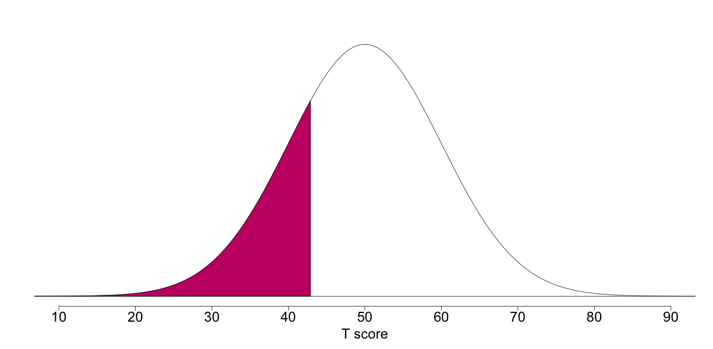
click for more info about reading this image
Your score on the Conservatism scale indicates that you are somewhat
lower in Conservatism. You may be more likely to support liberal
candidates and less likely to be religious or nationalistic. Depending
on your personal background and the country you live in, this may also
mean that you lean towards supporting civil rights issues, place more
faith in welfare programs, and are wary of traditional social roles and
military expenditure, among other things. But as you don't lean too
heavily in one political direction, it is possible that you are
sometimes able to find more ideological common ground with
conservatives.
"A liberal is a man
or a woman or a child who looks forward to a better day, a more
tranquil night, and a bright, infinite future."
— Leonard Bernstein
Introspection
Introspection is a factor concerning one's tendency to turn thoughts
inward and onto oneself, as well as one's efforts to grapple with
understanding the world more deeply. Individuals high in Introspection
may find themselves drifting off into spirals of thought as they
consider things about life and try to understand their role within
everything. They may be less content with existing explanations for
different phenomena. Individuals low in Introspection may prefer to stay
focused on what is in front of them and not to concern themselves over
what is invisible or abstract. They may rely more on an intuitive
understanding of the world and therefore feel less of a need to delve
into things or to ruminate and reflect.
Your score of 44 on Introspection places you higher than 27% of previous participants in this survey.
click for more info about reading this image
Your score on the Introspection scale indicates that you are somewhat
lower in Introspection. Most likely, you do not concern yourself too
often with reflection and the pursuit of self-understanding, although
you may have a moment here and there in which you contemplate your life.
At the end of the day, you are likely focused on what you see as more
productive modes of thought and action rather than rumination or
daydreaming.
"I'm not used to introspection. I've never lingered on my feelings. The show must go on."
— Brenda Lee
Well-Being
Well-Being is something that many people around the world covet and
even see as life's ultimate goal — countless self-help materials have
been developed with the intention of aiding people in this respect.
Individuals who are high in Well-Being tend to feel good about
themselves and their lives. They typically feel comfortable with who
they are, and rarely experience feelings of worthlessness or
hopelessness. This positive attitude towards oneself may confer a
variety of benefits, including better relationships, better health, and
less stress. Research shows that having perspective and gratitude can
result in greater Well-Being. Those scoring low in Well-Being may have
more difficulty enjoying what life has to offer.
Your score of 55 on Well-Being places you higher than 69% of previous participants in this survey.
click for more info about reading this image
Your score on the Well-Being scale indicates that you are somewhat
high in Well-Being. You remain generally positive without being an
excessive optimist. You are less likely to be complacent in your
well-being and more cognizant of the daily work of maintaining it.
"Happiness is letting go of what you think your life is supposed to look like and celebrating it for everything that it is."
— Mandy Hale
Industry
Industry is characterized by the virtues of diligence and
perseverance and industrious individuals tend to be hard-working,
efficient, and reliable. When given a task, they typically get to work
right away and make a point of completing the task promptly and
successfully. Given their strong work ethic, industrious people tend to
be pre-occupied, at times, with tasks that less-conscientious
individuals do not value. Less industrious individuals are not
necessarily unproductive, but they do tend to be more laid back and more
easily disinterested when the going gets tough.
Your score of 55 on Industry places you higher than 69% of previous participants in this survey.
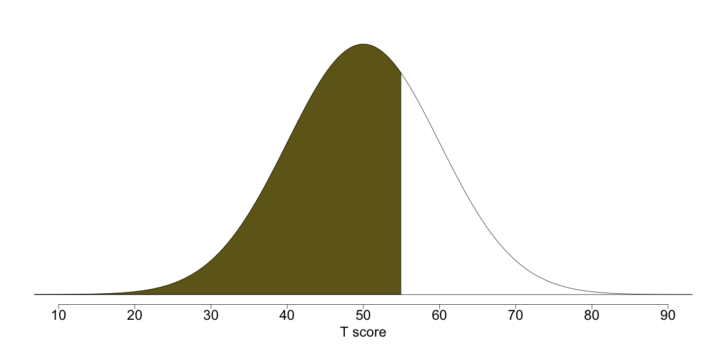
click for more info about reading this image
Your score on the Industry scale indicates that you are fairly high
in Industry. You take pride in your work and you probably derive real
pleasure from a job well done. The risk, of course, is that you
sometimes allow yourself to get caught up in your duties. Over the long
term, it is important to maintain a balance between the time you spend
working and the time you spend taking care of yourself.
"I am a great believer in luck. The harder I work the more of it I seem to have."
— Coleman Cox
Conformity
The Conformity factor concerns an individual's self-perception of
normalcy, as well as their desire to be seen as an ordinary or average
person. The pressure to conform is strongly connected to group
acceptance, and can emanate from many sources, including mainstream
media, social institutions, families, and peers. In many cultures, being
"normal" often means that one is more readily accepted and therefore
likely able to access shared resources of both tangible and immaterial
nature. An individual high in Conformity may feel these pressures more
keenly and have more of a desire to feel and be seen as normal. They
typically have less interest in sticking out or in flaunting their
differences. They probably feel more comfortable finding common ground
with others and identifying with the interests of others. Conversely,
an individual who is low in Conformity strives to be unique and would
hate to be seen as ordinary or mainstream. They may pride themselves on
thinking and acting outside the box.
Your score of 45 on Conformity places you higher than 31% of previous participants in this survey.
click for more info about reading this image
Your score on the Conformity scale indicates that you are somewhat
lower in Conformity. Most likely, you see yourself as a more unique
individual. Others may perceive you as being a bit different, and this
may not necessarily upset you. You may often bring originality and
creativity of thought or expression to the table when others are stumped
or stuck in a rut. You are probably not overly concerned with fitting
in, or are at least willing to sacrifice some social commonality or
agreement in the name of individuality and/or innovation.
"I think the reward for conformity is that everyone likes you except yourself."
— Rita Mae Brown
Art Appreciation
Art Appreciation involves an individual's interest in works of art
and artistic activities. This includes one's attitudes towards poetry,
the visual arts, performing arts, literature and more. A person high in
Art Appreciation will seek exposure to these topics, though they may not
be particularly artistic. Individuals low in Art Appreciation may not
feel that art is particularly enticing or relevant to their lives, and
likely concern themselves with work or hobbies of a different nature.
Your score of 45 on Art Appreciation places you higher than 31% of previous participants in this survey.
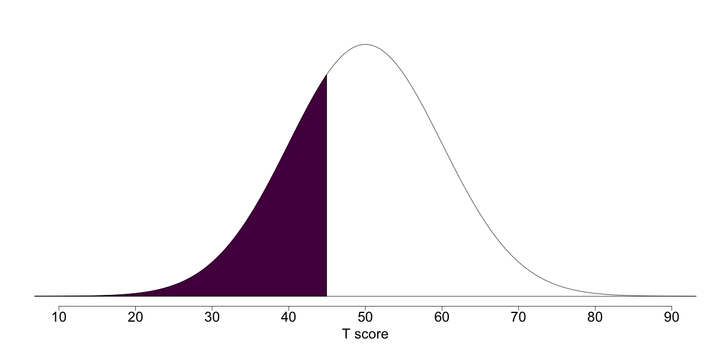
click for more info about reading this image
Your score on the Art Appreciation scale indicates that you are
somewhat lower in Art Appreciation. Most likely, you do not concern
yourself too often with artistic creation or consumption. It could be
that you prefer certain types of art over others, or simply that you
prefer activities unrelated to art altogether. Although you may be
knowledgeable about aspects of the arts and literature, it is likely
that art is not a very important part of your life.
"Simplicity is the ultimate sophistication."
— Leonardo de Vinci
Compassion
Individuals who are high in Compassion are likely to be perceived as
warm and caring individuals who enable others to feel at ease in their
presence. Although the draw to people high in Compassion is different
from the draw to people who are charismatic or powerful, compassionate
people are welcome friends who help those around them to feel cared for
and understood. Compassion is particularly important in the development
and maintenance of positive social relationships and there is a growing
body of evidence that these are crucial for well-being across the
lifespan. For this reason, Compassion is viewed by many as an important
component of a happy life.
Your score of 45 on Compassion places you higher than 31% of previous participants in this survey.
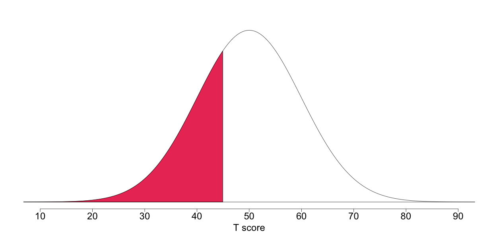
click for more info about reading this image
Your score on the Compassion scale indicates that you are a bit less
focused on the feelings and needs of others. It may simply be that the
conditions of your life require you to attend to your own needs first
and foremost! It is likely that although you don't shut other people out
entirely, you believe that most people are equipped to take care of
themselves. People probably know not to badger you with personal or
emotional requests. Even if you see a sad movie, you are less likely to
empathize with the characters to the point of being moved to tears.
"Put on your own oxygen mask before helping others."
— Randy Pausch, 'The Last Lecture'
Attention-Seeking
Despite the connotations that are often associated with
Attention-Seeking, it is not necessarily a narcissistic or negative
trait. Rather, Attention-Seeking can be motivated by a variety of
concerns, including a desire to please people by making them happy or
entertained. Those who are more sociable, humorous and charismatic often
take center stage at social gatherings, for example, so it should be no
surprise that Attention-Seeking is most highly correlated with those
traits. It is true of course that those high in Attention-Seeking
sometimes put on a show to impress others and this behavior is sometimes
perceived as self-serving. Attention-seeking behavior is often quite
effective and this means that individuals who are high in this trait are
often perceived as being more popular and having more social
connections. Individuals low in Attention-Seeking prefer to be on the
sidelines and out of the spotlight. This sometimes allows them to be
more observant of what is going on around them. Though they are less
likely than those high in Attention-Seeking to be noticed or immediately
admired, they are not necessarily misanthropic or without social
skills. They may simply prefer social interactions in which all parties
contribute on a roughly equal level.
Your score of 55 on Attention-Seeking places you higher than 69% of previous participants in this survey.
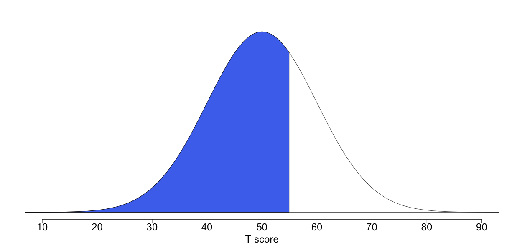
click for more info about reading this image
Your score on the Attention-Seeking scale indicates that you are
somewhat high in Attention-Seeking. Most likely, finding yourself at the
center of others' attention doesn't upset you too much. At a social
gathering, people may expect to see you being engaging and interesting.
Still, there are probably times when you would prefer to escape or avoid
the spotlight in order to make time for quiet reflection and
relaxation.
"The wheel that squeaks the loudest is the one that gets the grease."
— Josh Billings
Charisma
The Charisma scale measures one's adeptness in a range of social
situations. Charisma is often described as one of those unusual traits
that are hard to define but easy to recognize in others. It is broadly
understood as one's skill in handling interpersonal relations and
influencing others. It seems to involve a variety of factors including
confidence, friendliness, expressive body language, warmth and
sincerity. Individuals with unusually high Charisma are social
butterflies who rarely seem flustered or disconcerted. They can often
seem impressively uninhibited when approaching others or speaking
publicly. Individuals low in Charisma often find it difficult to know
what to say or do around other people and struggle to get others to see
their way. While Charisma often contributes to strong leadership
potential, many successful leaders have been notoriously uncharismatic.
Your score of 46 on Charisma places you higher than 34% of previous participants in this survey.
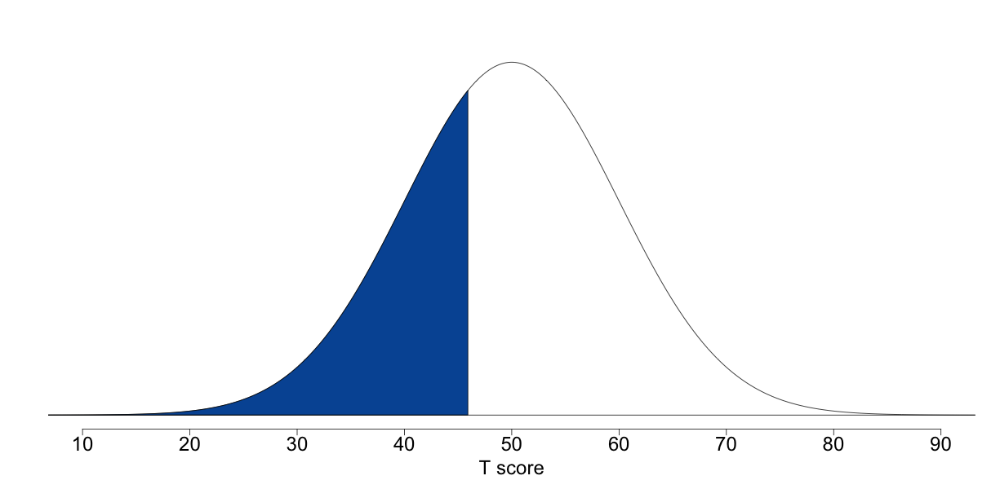
click for more info about reading this image
Your score on the Charisma scale indicates that you are not always
entirely comfortable with navigating social situations. You may
sometimes find yourself at a loss for what to say or do around other
people. Although you may have deep and enduring relationships with those
close to you, you struggle a bit to find points of commonality with
strangers or to engage in more shallow small-talk at networking events.
It is likely that public speaking in front of large crowds would stress
you out more than most.
"Charisma becomes the undoing of leaders. It makes them inflexible, convinced of their own infallibility, unable to change."
— Peter Drucker
Emotional Expressiveness
The Emotional Expressiveness factor involves the degree to which an
individual is comfortable sharing their feelings, perspectives, and
experiences with others. Emotional expressiveness is related to emotion
regulation, though the nature of this relationship can be complicated.
Those who are emotionally expressive tend to be more aware of how
they're feeling, and it is generally believed that higher levels of
expression are helpful for emotion regulation. It may also be the case
however that excessive emotional expression (or emotional expression
that is not well-received by others) can be counter-productive for
emotion regulation. Individuals who are high in Emotional
Expressiveness are less inhibited about showing their emotions in front
of others, and may be less concerned with how others perceive them.
Individuals low in Emotional Expressiveness typically feel more pressure
to keep up an appearance of emotional stability, and may be more
guarded in showing their true feelings.
Your score of 46 on Emotional Expressiveness places you higher than 34% of previous participants in this survey.
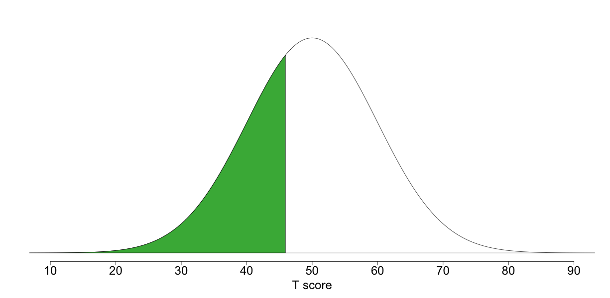
click for more info about reading this image
Your score on the Emotional Expressiveness scale indicates that you
are somewhat low in Emotional Expressiveness. Most likely, you are a bit
more guarded about sharing your feelings and revealing information
about yourself. It may be that you are wary of burdening others with
your negative feelings, or that you just don't feel comfortable talking
about your emotions. While you may be much more open with others after
you get to know them a little, they will probably have to earn your
trust before you're comfortable revealing your true self.
"The world is a tragedy to those who feel, but a comedy to those who think."
— Horace Walpole
Honesty
The Honesty dimension relates mainly to the behaviors of cheating or
lying, but it also extends more generally to include one's willingness
to take advantage of others for their own benefit. Individuals who are
less honest would be more likely, for example, to deceive others or cut
corners when there are no perceived consequences (and maybe even when
there are consequences). Highly honest individuals, on the other hand,
are more likely to uphold social norms about stealing, cheating, and
acting in good faith in interpersonal relationships. Of course, the
social demands for honesty are quite high and, ironically, dishonest
individuals may be relatively unlikely to respond openly to items about
lying and cheating. The feedback provided here is based on the answers
you gave, so the accuracy of your scores will reflect the degree to
which you were honest with yourself!
Your score of 53 on Honesty places you higher than 62% of previous participants in this survey.
click for more info about reading this image
Your score on the Honesty scale indicates that you are somewhat high
in Honesty. Being truthful is important to you so you rarely lie or
cheat to get ahead. It is also rare that you will consciously take
advantage of someone for your own ends. You probably do your best to be
fair and stick to your word. You may be disappointed from time to time
by others who fail to uphold the same standards but you also recognize
that some people value honesty less than their own success in life.
"No legacy is so rich as honesty."
— Shakespeare, 'All's Well That Ends Well'
Sensation-Seeking
The Sensation-Seeking factor involves one's desire to engage in more
adventurous or risky activities. Sensation-Seeking can take a variety of
forms; for instance, some individuals who score highly may love scaling
mountains but eschew recreational drug use, while others feel the
opposite. Individuals high in Sensation-Seeking may feel bored when idle
or if they go long stretches with nothing exciting or thrilling to do.
Individuals low in Sensation-Seeking derive less pleasure from thrilling
activities, often because they find higher levels of arousal
unpleasant.
Your score of 47 on Sensation-Seeking places you higher than 38% of previous participants in this survey.
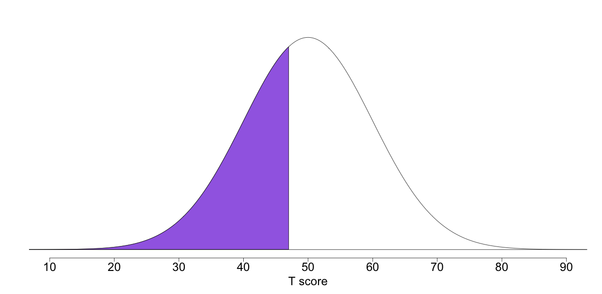
click for more info about reading this image
Your score on the Sensation-Seeking scale indicates that you are
somewhat low in Sensation-Seeking. It is less likely that you derive
enjoyment from risky or dangerous activities. This means that, although
you may not shy away from difficulty or excitement per se, you know that
some things are not worth the risk. You have a mature understanding of
the potential negative consequences that may come from engaging in risky
behavior, and you wisely take a pass when risky opportunities arise.
"Safety may get old but so do those who practice it."
Easy-Goingness
Easy-Goingness relates to one's preferred pace of lifestyle. Whereas
individuals who score highly in the Easy-Goingness trait are content to
let life proceed at its own pace, those who score low tend to prefer to
grab life by the horns. Whereas in some cultures someone who is high in
Easy-Goingness may be criticized as lazy or lay-about, in others such an
individual is perceived as being content with the way they live their
lives. Similarly, someone low in Easy-Goingness could be described as
either a go-getter or as overly high-strung.
Your score of 53 on Easy-Goingness places you higher than 62% of previous participants in this survey.
click for more info about reading this image
Your score on the Easy-Goingness scale indicates that you are fairly
high in Easy-Goingness. More than most, you are able to enjoy relaxation
and life's simple pleasures, and to relax even when things are bustling
around you. You are probably more amenable to taking things slow and
easy, and feel less of a need to force things to run more efficiently.
But this doesn't mean that you laze about all the time or that you never
get anything done... more likely, you take your leisure seriously and
are better at establishing work-life balance.
"The greatest happiness is doing nothing"
— Zhuangzi
Self Control
Self-Control is a measure of a person's ability to control their
short-term desires, often for the sake of long-term benefit. This can
involve an individual's adeptness at controlling cravings, or by the
same token the frequency with which an individual finds themselves
succumbing to temptation. Individuals high in Self-Control have an
easier time holding themselves back from something that might cause them
trouble in the long run. Individuals who score lower will often find
themselves splurging, and may adopt a policy of "act now, figure it out
later" when faced with something enticing. Ultimately, they ascribe to a
more hedonistic lifestyle, and may see less point in delaying pleasure.
Many people wonder how Self-Control and Impulsivity are related. They
tend to have a moderate negative correlation (about -0.4).
Self-Control relates more to the resistance of urges, temptations and
cravings whereas Impulsivity more generally reflects acting before
thinking.
Your score of 53 on Self Control places you higher than 62% of previous participants in this survey.
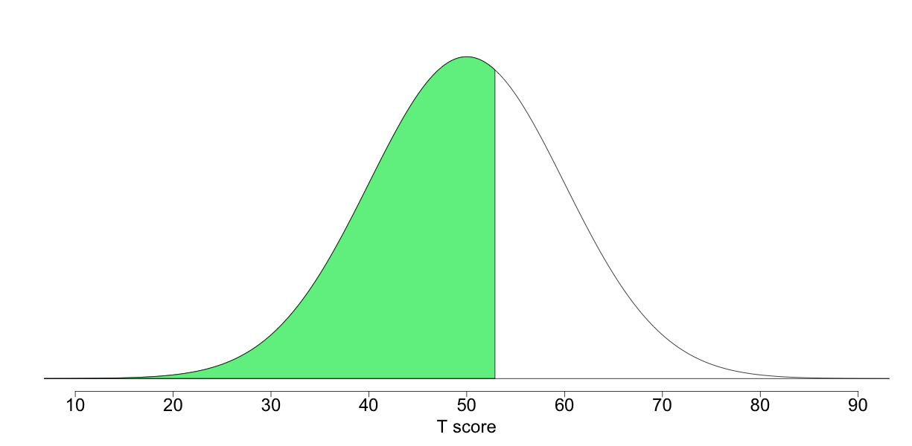
click for more info about reading this image
Your score on the Self-Control scale indicates that you are fairly
high in Self-Control. More than most, you are able to curb your cravings
and resist temptation. Even if confronted with something that would be
irresistible for most (but unhealthy in the long run), you probably have
less difficulty saying no. Your self-discipline and forward thinking
may mean that you miss out on more fun in the shorter-term, but that
things pay off for you in the long run.
"You have power over your mind — not outside events. Realize this, and you will find strength."
— Marcus Aurelius
Sociability
Sociability relates to behaviors that are predictable given the name
of the trait — individuals who are highly sociable prefer to be around
other people much more than being alone. Of course, humans are social
animals so most individuals do not like to go long periods of time
without social contact of one form or another. Individuals differ
however in terms of the extent to which they can handle large crowds or
nearly constant socialization. Individuals who are low on Sociability
prefer small groups and may even prefer to be alone most of the time.
Those who are high on Sociability think of themselves as alone when
working in a loud coffeeshop and prefer to be surrounded by large groups
of friends. Sociability is a hallmark of Extraversion so it is no
surprise that it is moderately-to-strongly correlated with the traits of
Sensation-Seeking (.4), Attention-Seeking (.5), and Charisma (.5). But
it is also positively correlated with a sense of well-being, likely due
to humans' strong need for social support and friendship.
Your score of 48 on Sociability places you higher than 42% of previous participants in this survey.
click for more info about reading this image
Your score on the Sociability scale indicates that you are somewhat
low in Sociability. You may rarely enjoy large parties, but it depends
on the circumstances and your energy level. More likely, you prefer the
company of a few friends, especially those who you know quite well.
You probably don't spend much time chatting with people you've never met
and you probably don't care much for big crowds.
"Being alone has a power that very few people can handle."
— Steven Aitchinson
Creativity
The Creativity scale measures one's tendency to come up with new and
different ideas, as well as one's interest in breaking from the mold and
following less trodden paths, whether through work or hobbies.
Creativity is not the same thing as intelligence, but rather a
particular mode of thinking and expression. Individuals high in
Creativity may be better at more creative jobs that allow room for
creative expression than those which are heavily structured. They may
also be better at divergent thinking, which entails coming up with
multiple solutions to a single problem. This is distinguished from
convergent thinking, which involves finding the single correct answer to
a problem. Individual's lower in Creativity are by no means necessarily
less smart, but may simply have more respect for previously established
modes of thinking and an appreciation for simplicity and tradition.
Your score of 52 on Creativity places you higher than 58% of previous participants in this survey.
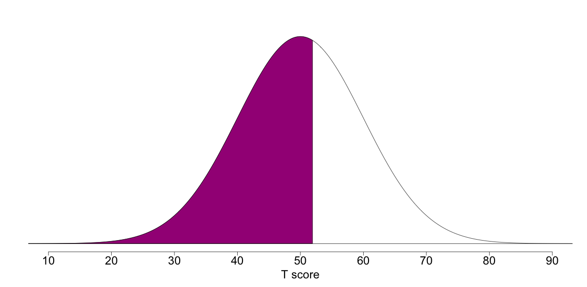
click for more info about reading this image
Your score on the Creativity scale indicates that you are fairly high
in Creativity. It is likely that you often think outside the box and
find yourself coming up with new and interesting ideas. People may turn
to you when they need a fresh perspective. At the same time, your
penchant for novel thinking may make it more frustrating for you to
perform mundane tasks or to do work that doesn't allow for creative
expression.
"Creative thinking inspires ideas. Ideas inspire change."
— Barbara Januszkiewicz
Intellect
The Intellect scale measures how quickly an individual grasps new
concepts, and how much information they can mentally handle at once. A
person's Intellect score is not necessarily a complete indicator of how
"smart" they are, let alone how much they know, but rather a more
specific measure of the speed with which they learn new things. Of
course, intelligence, which is a broader concept unique from one's
Intellect, can also involve one's ability to recall and utilize what one
has learned, to think deeply and critically, and even to stick to the
task of learning. While an individual with a higher Intellect score
might process a lot of new material quickly, someone with a lower
Intellect score might adopt a more methodical or pragmatic approach.
Your score of 49 on Intellect places you higher than 46% of previous participants in this survey.
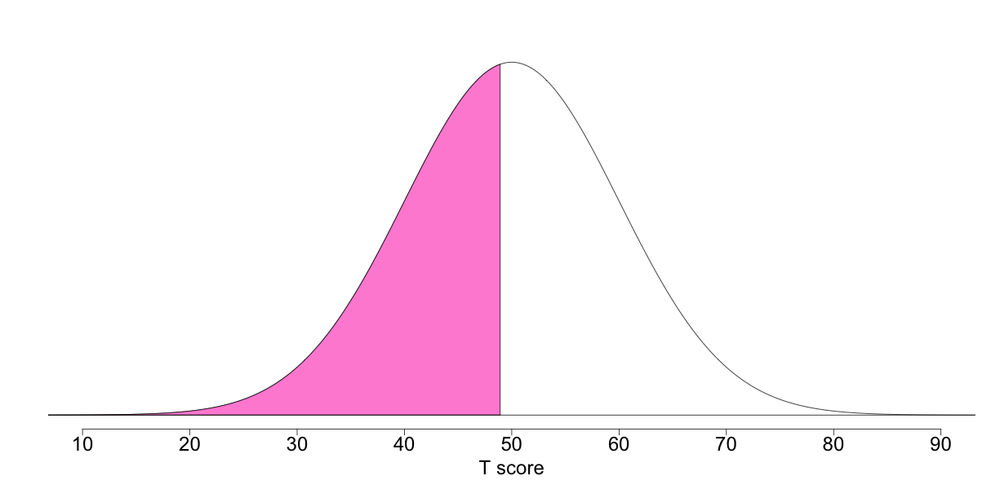
click for more info about reading this image
Your score on the Intellect scale indicates that you are somewhat
less interested in philosophical concerns. While you might pick up some
things quickly, other topics might require more time (perhaps because
you are not really interested). It is likely that in general, you take a
more careful or thorough approach to learning and spend longer sorting
out your thoughts and planning your words. This may mean that when you
arrive at your final conclusion, it is more polished and coherent than
it would be otherwise.
"We should take care not to make Intellect our God; it has, of course, powerful muscles, but no personality."
— Albert Einstein
Adaptability
An adaptable individual is someone who can more readily adjust to
changes in their environment. They are more likely to crave novelty and
variety in their life, and to find themselves bored with routine.
Adaptability also relates to one's ability to perform on the fly, or
conversely to one's preference for comprehensive planning. Individuals
low in Adaptability may find themselves more flustered by change, as
they prefer plans and the stability of repetition. Not knowing what will
come next is more a source of concern or frustration than of
excitement.
Your score of 51 on Adaptability places you higher than 54% of previous participants in this survey.
click for more info about reading this image
Your score on the Adaptability scale indicates that you are fairly
high in Adaptability. You are probably more open than most to riding the
tides of change and dealing with things as they come. Your more
flexible attitude allows you to better handle novel or unexpected
situations which require adjustment. You may stick to some routines and
have a certain baseline of stability in your life, but likely also crave
variety and spontaneity. At times, you may even be comfortable
introducing large-scale change into your life if it appears to be the
best choice.
"I never say never, and I never say always."
— Grace Kelly
Authoritarianism
The Authoritarianism dimension relates to an individual's attitudes
about rules and laws. Those high in Authoritarianism typically believe
that laws exist for good reason (to keep those who would otherwise
transgress in line) and thus should be unequivocally obeyed. To such an
individual, authority is crucial to maintaining social order, and
rebellious behavior should be nipped in the bud. This belief may be
rooted in a more negative view of humanity as naturally unruly and
therefore requiring authority to be properly whipped into shape. Those
who are low in Authoritarianism believe that strict laws and punishments
are not always necessary or useful for reducing crime and improving
society. This view is often borne out of concerns that many rules and
laws are biased or are not equally enforced among all individuals.
While these issues are better suited for political and philosophical
forums, the reality is that perspectives on these issues underlie
differences in the trait of Authoritarianism. Authoritarianism tends to
be moderately positively correlated (0.4) with Conservatism.
Your score of 51 on Authoritarianism places you higher than 54% of previous participants in this survey.
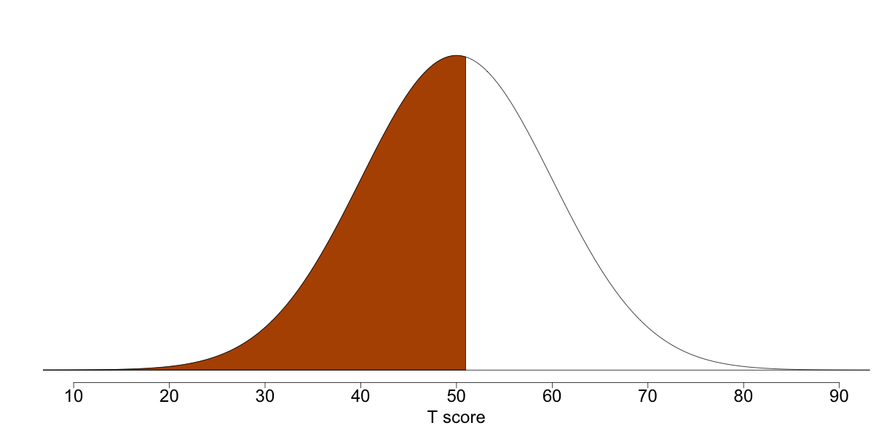
click for more info about reading this image
Your score on the Authoritarianism scale indicates that you are
somewhat high in Authoritarianism. Most likely, you tend towards
respecting the law and the authority put in place to enforce it. You
probably try to follow the rules and believe that even if laws aren't
always perfect, they play an important part in reducing crime and
ensuring safety for the greatest number of people.
"We do disagreeable things so that ordinary people here and elsewhere can sleep safely in their beds at night."
— John Le Carre, 'The Spy Who Came in From the Cold'